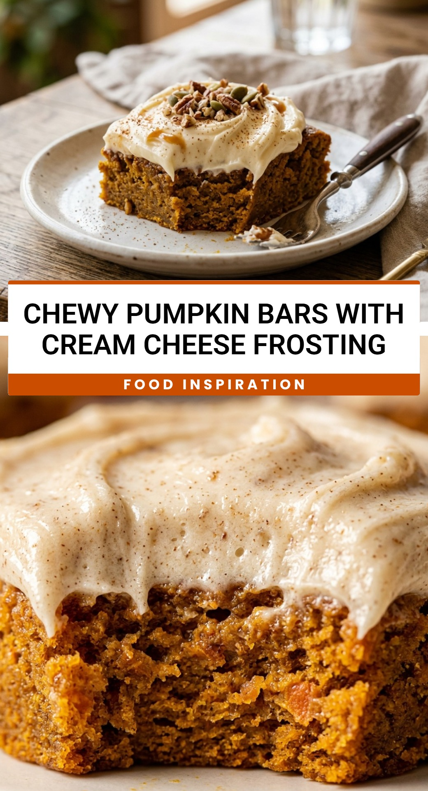

Chewy Pumpkin Bars With Cream Cheese Frosting
October 1, 2026

When the crisp autumn air starts to settle in, there is nothing quite as comforting as the aroma of warm spices wafting through the kitchen. These Chewy Pumpkin Bars with Cream Cheese Frosting are the ultimate fall treat. They offer a texture that is perfectly between a moist cake and a dense blondie, making every bite incredibly satisfying. The rich, spiced pumpkin base is topped with a thick layer of tangy, velvet-smooth frosting that balances the sweetness beautifully.
Recipe Information
Prep Time: 15 minutes
Cook Time: 30 minutes
Total Time: 45 minutes
Servings: 24 bars
Difficulty Level: Easy
Nutrition Information
Calories per serving: 265 kcal
Protein: 3g
Carbohydrates: 32g
Fat: 15g
Fiber: 1g
Sugar: 22g
Sodium: 180mg